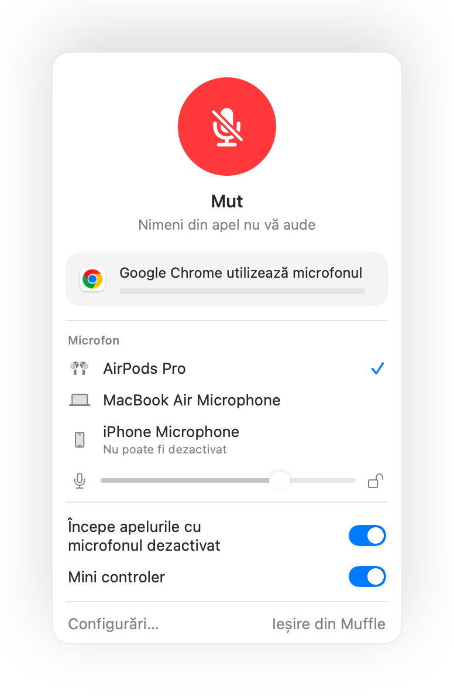

Dezactivarea din AirPods nu funcționează pe Mac? Iată soluția
macOS vă permite să dezactivați un apel apăsând tija căștilor AirPods, dar numai dacă aplicația de apel acceptă funcția. Multe nu o acceptă, inclusiv Chrome și apelurile web deschise în el. Apăsați, se aude un sunet scurt de eroare, apare mesajul „Nu se poate controla microfonul”, iar participanții continuă să vă audă.
Muffle adaugă acest suport în orice aplicație. Preia apăsarea, dezactivează microfonul Mac-ului și redă semnalul sonor standard de dezactivare.
Configurați apăsarea AirPods pentru a dezactiva orice aplicație
- 1
Instalați Muffle și permiteți accesul la microfon. macOS trimite apăsarea doar aplicațiilor care pot utiliza microfonul.
- 2
Verificați dacă opțiunea „Dezactivați și activați cu o apăsare AirPods” este activată în Configurări Muffle.
- 3
Intrați într-un apel. Apăsarea dezactivează microfonul doar când o aplicație îl utilizează.
- 4
Apăsați tija o dată pentru a dezactiva microfonul și încă o dată pentru a-l activa.

- În afara apelurilor, apăsarea redă și suspendă redarea muzicii ca de obicei.
- Dacă pe căștile AirPods folosiți o altă apăsare pentru controlul apelurilor, verificați configurările căștilor în Configurări sistem.
Întrebări frecvente
De ce Mac-ul redă un sunet de eroare când apăs pe AirPods?
Aplicația în care vă aflați în apel nu acceptă apăsarea de dezactivare de pe AirPods, așa că macOS o respinge. Când Muffle rulează, apăsarea dezactivează direct microfonul.
Ce modele de AirPods acceptă apăsarea pentru dezactivare?
AirPods Pro, AirPods 3 și versiunile ulterioare, precum și AirPods Max, plus modelele Beats cu control al apelurilor.